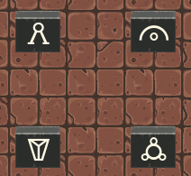
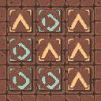
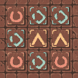
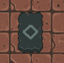
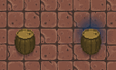
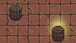
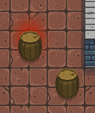

To move around use WA SD or 🡹 🡸 🡻🡺.
Access the inventory and diary with I and press I again to close the menu. Navigate between the two tabs with the mouse.
Interact with objects in the world by pressing K.
Walking too fast? Hold ⇧Shift while moving around to reduce your speed.
Cycle through the different map styles with M if you already learned any cartography skills.
For transcendental traveling you press P to set the pathway and by pressing T you will travel to that location.
You might encounter different types of puzzles in the dungeons. All of these puzzles require a slightly different approach in solving them. As a true tome traveler and adventurer you can try figuring out the solution by yourself.
Did you stumble across four huge runestones with obscure inscriptions? Standing in front of them and touching the engraving will trigger a hidden mechanism which lowers the stones into the ground. Activate them in the correct order to reveal a secret. Search the nearby rooms for hints.

You might have seen rooms where some of the tiles have peculiar symbols on them. Interacting with one of the tiles changes them and affects all adjacent ones as well. The floor would look marvelous if all the tiles would show the same symbol. Then, the cryptic floor will give out its secret.

Rumor has it that a challenging variant of these cryptic floor tiles exists. The behavior is almost identical, but activating tiles alternates between more symbols than its ordinary relative. Indeed, an intriguing mystery and doubtlessly lavishly rewarding.

There is a scholar going by the name of Regshom who studied these cryptic floor tiles intensively. Apparently, Regshom deciphered the algebraic formula behind the tiles. Getting his advice most definitely brings you closer to the treasures guarded by these puzzles. However, people say that Regshom demands a hefty price for his knowledge.

Throughout your journey you will come across a broad array of books. Most of them will benefit your progress and might even play an essential role in your success. Some books, however, hold sinister secrets.
After reading the book, a vast void unfolds deep inside you. As long as this book is in your possession, you will notice a dark blue aura around certain crates, jars, and barrels. This dark aura reflects the state of the object: Unworldly emptiness.

After reading the book, your mind feels sudden comfort. As long as this book is in your possession, you will notice a bright golden aura around certain crates, jars, and barrels. This radiant aura reflects the state of the object: Worldy wealth.

After reading the book, your inner ear picks up a distant clack of door lock. As long as this book is in your possession, you will notice a glowing red aura around certain crates, jars, and barrels. This warming aura reflects the state of the object: Unbarred passage.

Mograv was an exceptionally gifted inventor. With her manuscripts you develop the instinctive feeling of recognizing which of the huge engraved runestones you have to activate first to make the hidden mechanism click.
The scholar Regshom deciphered the algebraic formula that sits behind the cryptic floor tiles. With the first volume you understand the ordinary variant and you know which tile to activate first. The second volume dives into the innards of the more challenging version to also master these with ease.
Scholars all over the world consider this work to be nothing but a fraud. Only a few give credence to spiritual pathways connecting two different locations. As long as this book is in your possession, you can create a temporary pathway at any location. Traveling through that pathway destabilizes it.
Written centuries ago, the Colossal Cartography Compendium is still the best series of books published for everything around maps and navigation. The first volume covers the basics, so you can map out your current location as well as all areas you have discovered so far. In the second volume you learn about the advanced techniques which helps in outlining rooms in the dungeon and you keep track of locked doors which you come across. The third volume aids you locating locked passages in advance and how to mark certain navigational support on the map. The final chapter contains ancient blueprint collections of dungeons including the entrance and exit, as well as secret chambers.